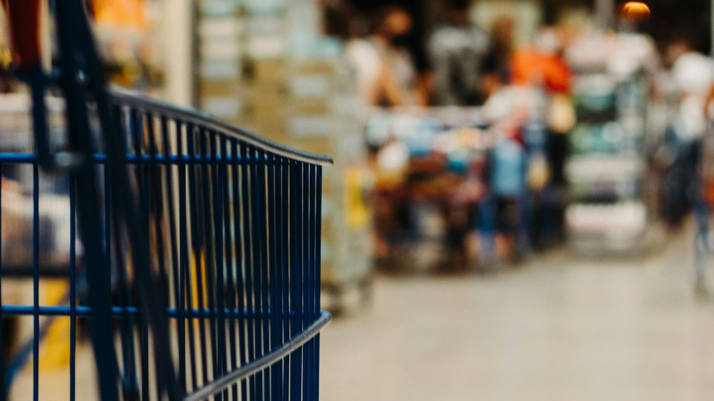
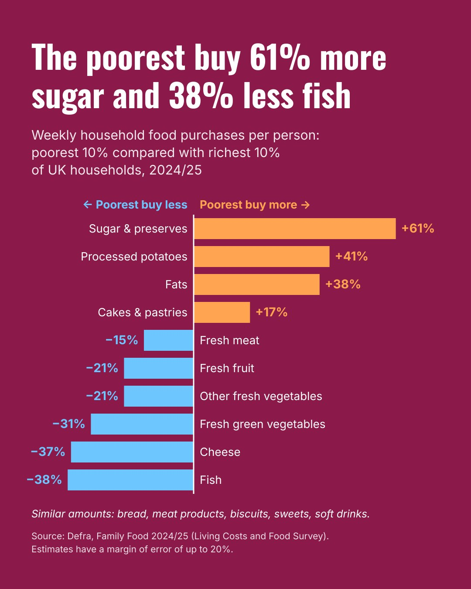

Money › Cost of living
Does your income decide what's on your plate?
The UK's poorest households buy more sugar and fats, and far less fish and fresh fruit, than the richest, and they pay less for the fresh food they do buy. Here is what the latest government figures show.
By Kenan Zeybek · November 2026

Every week, the richest 10% of UK households spend £45.72 per person on food and drink for the home. The poorest 10% spend £29.57, about a third less.
But the gap is not only about money. The latest Family Food figures from the Department for Environment, Food and Rural Affairs (Defra), covering April 2024 to March 2025, show that income also shapes what ends up in the shopping basket.
The richest households buy more fresh fruit, greens and fish, and pay more for them. The poorest buy 61% more sugar.
What the poorest buy more of, and less of
Compared with the richest tenth of households, the poorest buy 61% more sugar and preserves, 41% more processed potatoes and 38% more fats, such as butter, margarine and oil, per person each week (Figure 1).
They buy less fresh food: 38% less fish, 37% less cheese, 31% fewer fresh green vegetables and 21% less fresh fruit.
For bread, meat products, biscuits, sweets and soft drinks, the amounts are similar: the difference is under 10%.

The richest stand apart
Figure 2 lets you explore the data for all ten income groups. Choose a food with the buttons above the chart, and switch between the amount bought and the money spent. Each bar is one income group, from the poorest 10% (group 1) to the richest 10% (group 10). Hover over a bar to see the exact figure, or click on it to compare it with the average.
The richest buy the most fresh fruit
Amount of fresh fruit bought per person per week, by income group, UK, 2024/25
Choose a food:
Click on a bar to compare an income group with the average.
The chart shows that the change is not always gradual. For fresh fruit, households in the first eight income groups buy between 630g and 700g per person each week. The figure then rises to 781g in the ninth group and 842g in the richest. Fish follows the same pattern: 105g for the poorest, between 110g and 131g for the groups in the middle, then 170g for the richest.
Sugar works the other way. Most income groups buy between 70g and 102g a week; the richest buy just 51g.
In other words, much of the gap comes from the richest tenth, whose shopping looks very different from everyone else's.
Paying for quality
It's not just about how much you spend, it's about what ends up in your basket.
Comparing spending with the amounts bought shows the average price each group pays. The richest pay on average £3.83 per kilo of fresh fruit they buy, against £2.57 for the poorest. For fish, it is £14.54 a kilo against £10.92.
£3.83 vs £2.57
per kilo of fresh fruit (richest vs poorest)
£14.54 vs £10.92
per kilo of fish (richest vs poorest)
This suggests that richer households do not only buy more fresh food: they also choose more expensive products, whether that means different varieties, brands or quality.
How the figures are collected
The data comes from the Living Costs and Food Survey, in which households record everything they buy over two weeks. Households are split into ten income groups of equal size, based on "equivalised" income, which means income adjusted for the size of the household.
The figures show what people buy for the home, not exactly what they eat, and they do not include eating out. Defra warns that purchases tend to be under-reported in this kind of diary survey, and many of these estimates have a margin of error of between 10% and 20%.